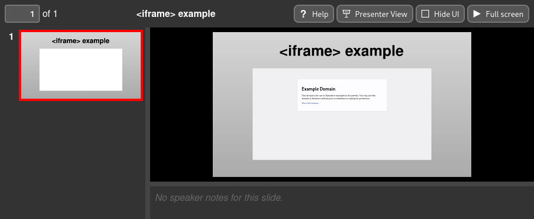
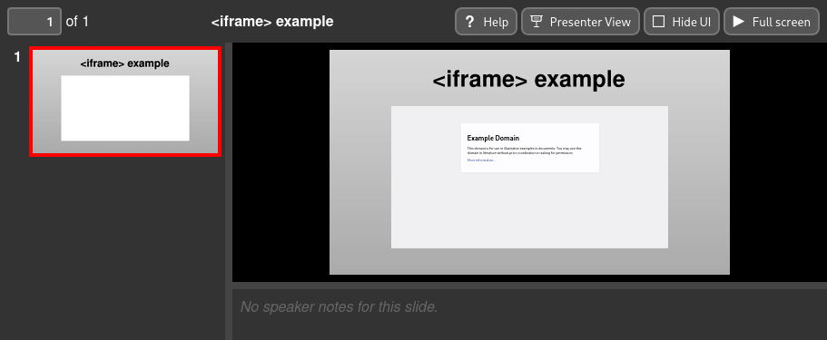

Creating <iframe> elements¶
Slidie supports the inclusion of inline frames (iframes) in slides when viewed in a web browser using the XHTML output format. This relatively powerful feature enables you to embed arbitrary web content into your presentations. At its simplest, this can provide a simple browser instance within your presentation for demonstrating some website or application. It could also be used as the basis for developing custom live and/or interactive widgets for use in demonstrations: you have the full web platform at your disposal!
 

Inserting an iframe¶
To insert an iframe into a slide, insert a placeholder rectangle or image grouped with a magic text box with one of the following forms:
@@@
iframe = "<URL here>" # Short form
@@@
# Long form
[iframe]
url = "<video URL here>"
query = [] # Extra query parameters to append to the URL. Optional.
scale = 1.0 # Scaling factor for the displayed content. Optional.
name = "<name here>" # HTML name attribute for the iframe. Optional.
The purpose of the optional parameters is explained in subsequent sections.
Note
If an iframe grabs, or is given, focus, slidie becomes unable to intercept keyboard shortcuts to advance through slides.
Warning
Some websites use various means to prevent their loading within iframes and so can’t be used.
Warning
Browsers often enforce fairly strict (and complicated) security rules
around iframes. Most notably, Firefox will, in certain situations, prevent
the user from interacting with iframes in pages loaded from file://
URLs. For this reason, if you’re doing anything complex with iframes, it
might be necessary to serve the XHTML viewer from a web server (e.g.
python -m http.server.
Warning
All iframes on all slides are be loaded as soon as the viewer is opened and remain loaded regardless of their visibility. Beware of the potential resources consumed and audio playback.
A future version of slidie might add a postMessage() based API to inform iframes whether they are visible or not.
Appending URL query parameters¶
The query parameter of the long-form magic text value may be used to append
extra query parameters to the provided URL. This may be convenient if you’re
developing some widget for inclusion in your slides which is controlled by
query parameters since slidie will handle the URL encoding of values for you.
The query parameter may be specified in any of the two following forms:
# Adds: foo=bar&baz=qux&baz=quo
query.foo = "bar"
query.baz = ["qux", "quo"] # Repeated query parameters
# Adds baz=qux&foo=bar&baz=quo
query = [
{name="baz", value="qux"},
{name="foo", value="bar"},
{name="baz", value="quo"},
]
The latter form is more verbose but makes it possible to control the relative order and interleaving of repeated query parameters.
Scaling¶
By default, the contents of the iframe will be scaled such that when the slide is displayed at its ‘native’ size, the iframe contents will also be rendered at their native size. Likewise, if the slide is shown smaller (or larger) on screen, the iframe’s contents will be scaled accordingly.
For example, in the example screenshot above, the slide has a native size of 1920x1080 and so the example.com page appears very small in the scaled-down view of the slide.
The optional scale parameter may be used to force the iframe contents to be
rendered at a larger or smaller than usual scale. For example, setting
scale to 2 will cause the iframe contents to be rendered at twice the
native size. This may be helpful for making text more ledgible when slides are
being shown on a projector or shared display.
Tip
SVG transforms (and filter effects) applied to your placeholder rectangle will be applied to the resulting iframe as displayed in your browser. This means that you can create distorted browser windows which still function correctly – including accepting input, albeit with unusual shapes.
Note
Slidie goes to great lengths to achieve the scaling regime it does since
the default scaling behaviour is almost never what you want, especially for
Inkscape-authored SVGs whose document scaling factors are often arbitrary.
You can, however, use the ‘native’ scaling by setting scale to 0.
Opening hyperlinks in an iframe¶
It is possible to add hyperlinks to your slides which open within an embedded iframe on that slide when clicked.
First, give the target iframe a name using the optional name parameter.
This assigns a HTML name attribute to
the iframe.
Next, create a hyperlink in your SVG, setting the ‘Target’ to the name you gave your iframe.
Tip
You can create hyperlinks directly in Inkscape by right-clicking an object and picking ‘Create anchor (hyperlink)’.